.gif)
اعلام دول العالم:
علم بفتح العين واللام يعني راية، وهي عبارة عن قطعة من القماش منقوش عليها رمز أو رموز للدلالة على قبيلة أو عشيرة أو دولة أو عصابة معينة. وتختلف الرايات بألوانها وأشكالها من دولة لأخرى، ولكل دولة راية تميزها عن غيرها من الدول.
واستخدمت الأعلام الأولى لمساعدة التنسيق العسكري في ميادين القتال، وتطورت الأعلام منذ ذلك الوقت إلى أداة عامة بدائية للإشارة وتحديد الهوية، ولا سيما في بيئات معزولة حيث التواصل يكون صعبا (مثل البيئة البحرية حيث يتم استخدام إشارة للتواصل). وأعلام الدول هي رموز لديها دوافع وطنية متنوعة وواسعة النطاق، وتشمل في أغلب الأوقات ترابط عسكري قوي بسبب استخداماتها المستمرة المتعلقة بالناحية العسكرية.
إن دراسة الاعلام تعرف بالفيكسيلولوجية، وهي كلمة مشتقة من الكلمة اللاتينية فيكسيلوم بمعنى علم أو راية.
الأعلام الوطنية لجميع الدول المستقلة في العالم حسب الترتيب الأبجدي:
| الدوله | العلم |
|---|---|
| أ | |
| أثيوبيا |

|
| أذربيجان |

|
| أرمينيا |

|
| أستراليا |

|
| أفغانستان |

|
| ألبانيا |

|
| ألمانيا |

|
| أنتيغوا وبربودا |

|
| أندورا |

|
| أندونيسيا |

|
| أنغولا |

|
| أوروغواي |

|
| أوزبكستان | 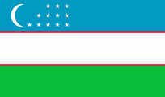 |
| أوغندا |

|
| أوكرانيا |

|
| أيرلندا |

|
| أيسلندا |

|
| إريتريا |

|
| إسبانيا | |
| إسرائيل |

|
| إيران |

|
| إيسواتيني (سوازيلاند سابقاً) |

|
| إيطاليا |

|
| استونيا |

|
| افريقيا الوسطى (CAR) |

|
| الأرجنتين |

|
| الأردن |

|
| الإكوادور |

|
| الإمارات العربية المتحدة |

|
| الباهاما |

|
| البحرين |

|
| البرازيل |

|
| البرتغال |

|
| البوسنة والهرسك |

|
| الجبل الأسود |

|
| الجزائر | 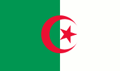 |
| الدنمارك |

|
| السلفادور |

|
| السنغال |

|
| السويد |

|
| الصومال |

|
| الصين |

|
| العراق | |
| الغابون |

|
| الفاتيكان |

|
| الفلبين |

|
| الكاميرون |

|
| الكونغو |

|
| الكونغو الديموقراطية | 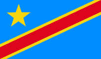 |
| الكويت |

|
| المغرب |

|
| المكسيك | 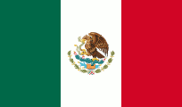 |
| المملكة العربية السعودية |

|
| المملكة المتحدة |

|
| النرويج | |
| النمسا |

|
| النيجر |

|
| الهند |

|
| الولايات المتحدة الأمريكيه |

|
| اليابان |

|
| اليمن |

|
| اليونان |

|
| ب | |
| بابوا غينيا الجديدة |

|
| باراغواي |

|
| باكستان |

|
| بالاو | 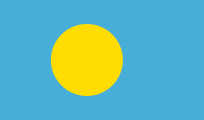 |
| بربادوس |

|
| بروناي |

|
| بلجيكا |

|
| بلغاريا |

|
| بليز |

|
| بناما | |
| بنغلاديش |

|
| بنين |

|
| بوتان |

|
| بوتسوانا |

|
| بوركينا فاسو | 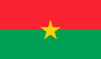 |
| بوروندي |

|
| بولندا |

|
| بوليفيا |

|
| بيرو |

|
| ت | |
| تايلاند |

|
| تايوان |

|
| تركمانستان |

|
| تركيا |

|
| ترينيداد وتوباغو |

|
| تشاد |

|
| تشيلي |

|
| تنزانيا |

|
| توجو |

|
| توفالو |

|
| تونس |

|
| تونغا |

|
| تيمور الشرقية | 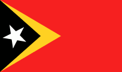 |
| ج | |
| جامايكا |

|
| جزر القمر |

|
| جزر المالديف |

|
| جزر سليمان |

|
| جزر مارشال |

|
| جمهورية التشيك | |
| جمهورية الدومنيكان |

|
| جنوب أفريقيا |

|
| جنوب السودان |

|
| جورجيا |

|
| جيبوتي |

|
| الدوله | العلم |
|---|---|
| د | |
| دومينيكا |

|
| ر | |
| رواندا | |
| روسيا |

|
| روسيا البيضاء |

|
| رومانيا |

|
| ز | |
| زامبيا |

|
| زيمبابوي |

|
| س | |
| ساموا | |
| سان مارينو |

|
| سانت فنسنت وجزر غرينادين |

|
| سانت كيتس ونيفيس |

|
| سانت لوسيا |

|
| ساو تومي وبرنسيبي | 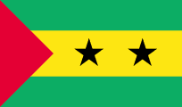 |
| سلطنة عمان |

|
| سلوفاكيا |

|
| سلوفينيا |

|
| سنغافورة |

|
| سوازيلاند (أعيدت تسميتها إلى إيسواتيني) |
|
| سودان |

|
| سوريا | 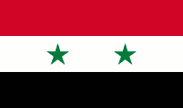 |
| سورينام |

|
| سويسرا |

|
| سيراليون | |
| سريلانكا |

|
| سيشيل |

|
| ص | |
| صربيا | |
| ط | |
| طاجيكستان |

|
| غ | |
| غامبيا |

|
| غانا |

|
| غرينادا |

|
| غواتيمالا | 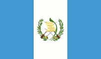 |
| غيانا |

|
| غينيا |

|
| غينيا الإستوائية |

|
| غينيا بيساو |

|
| ف | |
| فانواتو |

|
| فرنسا |

|
| فلسطين |

|
| فنزويلا |

|
| فنلندا |

|
| فيتنام |

|
| فيجي |

|
| ق | |
| قبرص |

|
| قرغيزستان |

|
| قطر |

|
| ك | |
| كابو فيردي |

|
| كازاخستان |

|
| كرواتيا | |
| كمبوديا |

|
| كندا |

|
| كوبا | |
| كوت ديفوار |

|
| كوريا الجنوبية |

|
| كوريا الشمالية | |
| كوستا ريكا |

|
| كوسوفو |

|
| كولومبيا |

|
| كيريباس | 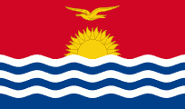 |
| كينيا |

|
| ل | |
| لاتفيا |

|
| لاوس |

|
| لبنان | 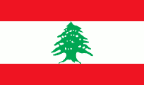 |
| لوكسمبورغ | |
| ليبيا |

|
| ليبيريا |

|
| ليتوانيا |

|
| ليختنشتاين |

|
| ليسوتو |

|
| م | |
| مالاوي |

|
| مالطا |

|
| مالي |

|
| ماليزيا |

|
| مدغشقر |

|
| مصر |

|
| مقدونيا (جمهورية مقدونيا اليوغسلافية) |

|
| منغوليا |

|
| موريتانيا | |
| موريشيوس |

|
| موزمبيق |

|
| مولدوفا |

|
| موناكو |

|
| ميانمار (بورما سابقا) |

|
| ميكرونيزيا | |
| ن | |
| ناميبيا |

|
| ناورو |

|
| نيبال |

|
| نيجيريا |

|
| نيكاراغوا | |
| نيوزيلاندا |

|
| ه | |
| هايتي |

|
| هندوراس |

|
| هولندا |

|